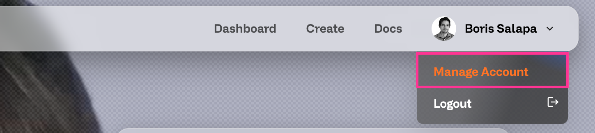
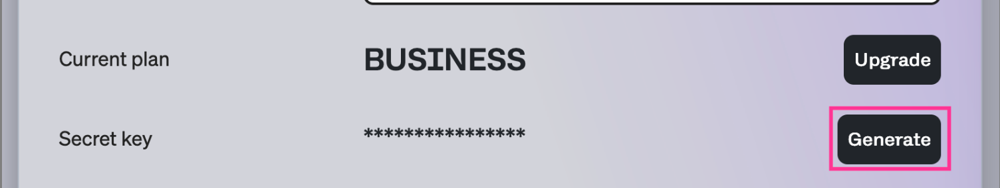

Create head visuals and Digital Humans in minutes. A practical guide to uploading, processing, and validating your video for cloning.
Quality matters
The fidelity of your clone depends heavily on the source video quality. Use a sharp, well-lit, front-facing shot with a neutral background and minimal noise.
For more tips on recording the best possible video, download our guide:
Open Recording Guide (PDF)
Recording: Stable front-facing camera, even lighting, neutral background. Avoid harsh shadows and noise.
Input: Video in MP4/H.264, 10s looking at the camera, 16:9 HD (1280x720p) at 25fps or 1080p.
Process: Obtain your Bearer Token → Generate → Validate result → Iterate.
Ethics & Legal: Always obtain and store explicit consent from the individual whose image is being cloned.


curl -X 'POST' \
'https://platform-api.unith.ai/auth/token' \
-H 'accept: application/json' \
-H 'Content-Type: application/json' \
-d '{
"email": "YOUR_EMAIL",
"secretKey": "YOUR_UNITH_SECRET_KEY"
}'Once the processing is complete and your head visual is uploaded, it will be available in your account. Open UNITH interFace and create a new Digital Human.
You’ll find the head visual in your Library, click in interFace to start using it right away.
Where can I find more information about cloning?
You can access our full documentation here: https://docs.unith.ai/
What’s the difference between Default mode and Two Loops?
Default mode focuses on speed and standard-quality results using a single pass over your video. It creates only one idle animation loop.
For greater expressiveness, we’ve introduced Two Loops. it defines two states:
one for idle (when silent), and another for talking.
This gives your head visuals more dynamism and realism.
You upload one video as usual, but define the exact transition point between idle and talking using the cut timestamp parameter.
Can I clone an animal?
No. Our model is trained to recognize human faces. You can try, but the output will likely not be accurate or usable for animal faces.
Is there a minimum quality required?
Yes. If the input doesn’t meet the minimum quality, facial features may not be detected correctly and the process can fail. Aim for:
What’s most important to make it work well?